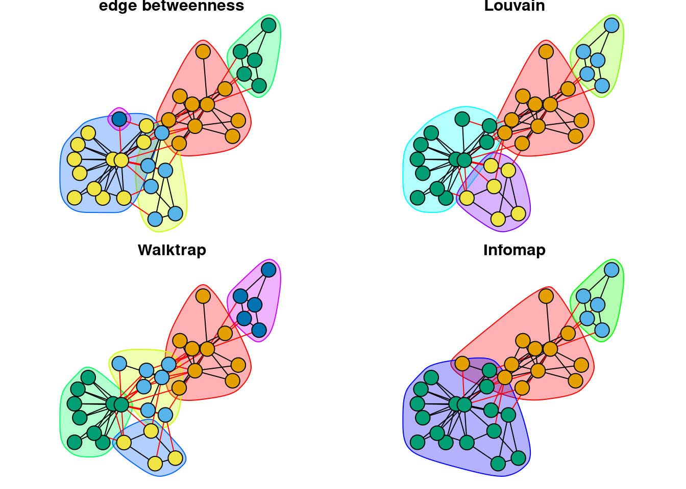

Chapter 8 Chapter 8: Meso-level network measures
A common feature of many real-world networks is that they have robust community structure. Nodes are considered to be part of the same community if the density of connections among those nodes is relatively higher than the density of connections between nodes from different communities (Newman, 2006).
Modularity, Q, is a measure of the density of links inside communities in relation to the density of links between communities (Fortunato, 2010). Networks with higher Q are said to show strong evidence of community structure.
8.1 How do network scientists “find” communities in networks?
Many community detection methods have been developed by network scientists to detect communities in networks. Each differs in their implementation, and reflects the creator’s implicit definition of what is a community. In this section we will explore just 4 of these methods.
If you are interested to learn more about community detection, check out Fortunato (2010) who provided a comprehensive comparison of various community detection techniques.
In this section we will use the undirected, unweighted version of the karate network from Chapter 4 for demonstration.
karate_el <- read.csv('data/karate_el.csv', header = FALSE)
karate_uu <- graph_from_data_frame(karate_el, directed = FALSE)
summary(karate_uu)## IGRAPH c56bab2 UN-- 34 78 --
## + attr: name (v/c)As you will see in the rest of this chapter, the template for conducting a community detection analysis is identical across the four methods. igraph contains additional community detection algorithms not covered in this chapter, but you should be able to generalize the application of these algorithms based on the code provided below. Generally, community detection algorithms have in-built default parameters that are used to optimize performance. At the completion of the method, it returns the communities (i.e., how the individual nodes are grouped), and the modularity score based on this final grouping.
8.2 Edge betweenness (“divisive method”)
The core idea behind the edge betweenness community detection method is that edges connecting separate communities tend to have high edge betweenness as all the shortest paths from one community to another must necessarily traverse through these edges.
The algorithm works by calculating the edge betweenness of all edges of the graph, and then removing the edge with the highest edge betweenness score. It recalculates the edge betweenness of remaining edges and again removes the one with the highest score. This repeats until modularity cannot be improved further.
Because there may be random components in the community detection algorithm, it is a good idea to use set.seed to ensure that your results are reproducible. Usually the algorithm is repeated several times, and the results are compared across runs. For now we will just run the algorithm once and return to this point at the end of this section.
For the edge betweenness method, we use the cluster_edge_betweenness function. Functions that begin with cluster_ are community detection methods in igraph. The outputs of the community detection are saved into the karate_edge object.
Normally, we wish to know at least these 3 things from the community detection results, which we can easily retrieve from the karate_edge object:
- The community membership of each node in the network (i.e., which nodes belong to the same community?). In the code below, this is merged with the node names and only the first 10 nodes are shown. It would be straightforward to save and export this information for further analyses; see the commented code below.
- We also want to know how nodes are distributed across the communities. By using the
tablefunction we get a count of the community labels. Here, we can see that there are a total of 5 communities, the largest one consisting of 12 nodes (community 4) and the smallest one consisting of a single node (community 5). - The modularity of the final community grouping, which gives us a sense of the quality of partitions retrieved by the algorithm. Here, Q is 0.401.
# 1. membership of nodes in each community
data.frame(node = V(karate_uu)$name, community = karate_edge$membership) |>
head(10) # view the first 10## node community
## 1 Mr Hi 1
## 2 Actor 2 1
## 3 Actor 3 2
## 4 Actor 4 1
## 5 Actor 5 3
## 6 Actor 6 3
## 7 Actor 7 3
## 8 Actor 9 4
## 9 Actor 10 5
## 10 Actor 14 1### saving the results
# results <- data.frame(node = V(karate_uu)$name, community = karate_edge$membership)
# write.csv(results, file = 'results.csv')
# 2. distribution of nodes across communities
table(karate_edge$membership) ##
## 1 2 3 4 5
## 10 6 5 12 1## [1] 0.4012985In the subsequent sections, you will notice that the structure of the code/output is identical, except for the specific community detection function used.
8.3 Louvain method (“greedy, maximization method”)
The core idea behind the Louvain community detection method is that communities are essentially “mergers” of small communities (Blondel et al., 2008), reflecting the self-similar nature of complex networks.
Each node is assigned to one community such that there are as many communities as there are nodes. Then remove node i from its community and place it in the community of the neighbor which yields the greatest gain in modularity. Repeat for all nodes in the network.
A new network is built where nodes are the communities found in the previous phase. Repeat Step 1.
Repeat Step 1 and 2 until it is not possible to further increase the value of Q.
For the Louvain method, we use the cluster_louvain function. The outputs of the community detection are saved into the karate_louvain object.
set.seed(1)
karate_louvain <- cluster_louvain(karate_uu)
# 1. membership of nodes in each community
data.frame(node = V(karate_uu)$name, community = karate_louvain$membership) |>
head(10) # view the first 10## node community
## 1 Mr Hi 1
## 2 Actor 2 1
## 3 Actor 3 1
## 4 Actor 4 1
## 5 Actor 5 2
## 6 Actor 6 2
## 7 Actor 7 2
## 8 Actor 9 3
## 9 Actor 10 3
## 10 Actor 14 1##
## 1 2 3 4
## 11 5 12 6## [1] 0.4197896Notice that the Louvain method returned 4 communities ranging in size from 5 to 12, with a Q of 0.419.
8.4 Random walker (“dynamic method”)
The core idea behind the random walker community detection method is that if there are communities in the network, a random walker will tend to spend more time inside the community than outside.
The Walktrap algorithm groups nodes together based on the similarities of the paths taken by the random walker starting from that node. The idea is to merge sets of vertices that have low “distance” from each other.
For the random walker method, we use the cluster_walktrap function. The outputs of the community detection are saved into the karate_walktrap object.
set.seed(1)
karate_walktrap <- cluster_walktrap(karate_uu)
# 1. membership of nodes in each community
data.frame(node = V(karate_uu)$name, community = karate_walktrap$membership) |>
head(10) # view the first 10## node community
## 1 Mr Hi 1
## 2 Actor 2 1
## 3 Actor 3 2
## 4 Actor 4 1
## 5 Actor 5 5
## 6 Actor 6 5
## 7 Actor 7 5
## 8 Actor 9 2
## 9 Actor 10 2
## 10 Actor 14 2##
## 1 2 3 4 5
## 9 7 9 4 5## [1] 0.3532216Notice that the random walker method returned 5 communities ranging in size from 5 to 9, with a Q of 0.353.
8.5 Infomap (“information-theoretic method”)
The core idea behind the Infomap community detection method is to leverage on information-theoretic methods to “describe” the information flow of the entire system (based on random walks).
The Infomap algorithm attempts to describe the random walker’s trajectory using the fewest number of “bits” of information. Communities are groups of nodes that receive new “names” during the compression process.
For the Infomap method, we use the cluster_infomap function. The outputs of the community detection are saved into the karate_infomap object.
set.seed(1)
karate_infomap <- cluster_infomap(karate_uu)
# 1. membership of nodes in each community
data.frame(node = V(karate_uu)$name, community = karate_infomap$membership) |>
head(10) # view the first 10## node community
## 1 Mr Hi 1
## 2 Actor 2 1
## 3 Actor 3 1
## 4 Actor 4 1
## 5 Actor 5 2
## 6 Actor 6 2
## 7 Actor 7 2
## 8 Actor 9 3
## 9 Actor 10 1
## 10 Actor 14 1##
## 1 2 3
## 12 5 17## [1] 0.4020381Notice that the Infomap method returned 3 communities ranging in size from 5 to 17, with a Q of 0.402.
8.6 Comparison of methods
Fortunato (2010) conducted a comprehensive comparison of community detection techniques. Generally, Rosvall & Bergstorm’s Infomap and Blondel et al.’s greedy modularity maximization method performed the best. Both also were relatively fast algorithms that were efficient for large networks.
The code below illustrates the similarities and differences in the results of the various community detection methods.
8.6.1 Comparing modularity
In this example, the Louvain method yielded community groupings that led to the highest Q score of 0.419, whereas the Walktrap method yielded the lowest Q score of 0.353. Overall, there is moderately strong evidence of community structure in the karate network with modularity scores approximating ~0.40 across the four community detection methods used.
## [1] 0.4012985## [1] 0.4197896## [1] 0.3532216## [1] 0.40203818.6.2 Comparing community membership
The code below provides the following visualization that compares how different methods are grouping nodes into communities.
par(mar=c(0,0,0,0)+.6, mfrow = c(2,2)) # reduce margins and plot both networks together
set.seed(1)
fixed_l <- layout_with_fr(karate_uu) # to fix node layout across plots
plot(karate_edge, karate_uu, layout = fixed_l, main = 'edge betweenness', vertex.label = NA)
plot(karate_louvain, karate_uu, layout = fixed_l, main = 'Louvain', vertex.label = NA)
plot(karate_walktrap, karate_uu, layout = fixed_l, main = 'Walktrap', vertex.label = NA)
plot(karate_infomap, karate_uu, layout = fixed_l, main = 'Infomap', vertex.label = NA)
More formally, we can make use of statistical methods such as the Fleiss’ Kappa test to quantify the extent to which the groupings are consistent across the 4 methods.
# first, compile the community membership results from all methods
compare_membership <- data.frame(
edge = karate_edge$membership,
louvain = karate_louvain$membership,
walktrap = karate_walktrap$membership,
infomap = karate_infomap$membership
)
# compute consistency that two nodes tend to be found in the same cluster
library(irr) # we need this library for the kappa test of interrater agreement ## Loading required package: lpSolve## Fleiss' Kappa for m Raters
##
## Subjects = 34
## Raters = 4
## Kappa = 0.325
##
## z = 8.29
## p-value = 0Although the Kappa test is significant at p < .05, indicating that the groupings are more consistent than expected from chance, the Kappa value of 0.332 is relatively low. This suggests that the community detection methods are returning similar but also somewhat different results in the community membership of individual nodes.
{Note: You may need to relabel so that ‘1’ corresponds to most popular category, etc.}
8.7 Things to note
Before ending this chapter it is worth highlighting the following.
8.7.1 Weighted and directed graphs
Some of the community detection methods listed above can make use of weighted and directed information in the community detection process; please refer to the documentation for details. Typically, you would need to modify the arguments in the cluster_ function to indicate that edge weights and direction should be considered. Please note that the interpretation of edge weights as distances or connection strength (see Chapter 7) can differ depending on the community detection method. Again, refer to the documentation for more information.
8.7.2 Networks with multiple components
As discussed in Chapter 6, not all nodes in the network necessarily forms a single connected component. In networks containing multiple network components, it is very likely that nodes in the smaller components are grouped together as a community in any community detection method. This is because doing so naturally optimizes modularity; hence, communities would never contain nodes that come from different components. It may make more sense to focus the community detection on the largest connected component of the network.
8.7.3 Calculating modularity for self-defined communities
It is possible to compute modularity based on pre-specified communities. For instance, you may have prior information on the subgroups that each node in the network belongs to (i.e., community labels that are extrinsic to the network structure; e.g., student interest groups or majors) and you want to see how those groupings correspond to the connectivity structure.
If the modularity of those labels are quite high and comparable to the community detection results, it would suggest that nodes that belong to the same extrinsic group also have relatively higher density of connections internally, relative to the density of connections across different groups.
In the toy example below, I provided “made-up” groups to the karate network through the node-attribute “suburb”. Because these labels were randomly generated, we would expect modularity computed based on these groups to be very low or close to zero.
# let's assume we have information about the suburb that each karate member lives in
V(karate_uu)$suburb <- sample(1:5, gorder(karate_uu), replace = TRUE)
modularity(karate_uu, membership = V(karate_uu)$suburb) # specify your own labels ## [1] -0.064020388.7.4 Comparing different runs
As mentioned in the introduction of this chapter, you can get slightly different results even when re-running the same community detection method on the same network (assuming that you did not initially set a stable random seed). It is a good idea to repeat this multiple times to check if your results are generally consistent. The code below shows you how to run the algorithm multiple times and save the outputs into a list object that you can later investigate further.
As you can see there are minor variations in the modularity scores for each instance, and the very high Kappa score of 0.95 indicates highly consistent communities across runs.
cluster_results <- list()
for(i in 1:5) { # change 5 to a different number if you want more runs
set.seed(i)
cluster_results[[i]] <- cluster_louvain(karate_uu)
}
# compare Q
sapply(cluster_results, modularity)## [1] 0.4197896 0.4197896 0.4155983 0.4155983 0.4155983# compare consistency of membership
# first, compile the community membership results from all runs into a single df
df1 <- lapply(cluster_results, function(x) x$membership)
df1_merged <- do.call(cbind, df1)
kappam.fleiss(df1_merged)## Fleiss' Kappa for m Raters
##
## Subjects = 34
## Raters = 5
## Kappa = 0.925
##
## z = 27.6
## p-value = 08.7.5 Other community detection methods
Several other community detection methods can be implemented in igraph:
- cluster_fast_greedy - fast greedy modularity optimization algorithm
- cluster_fluid_communities - community detection algorithm based on interacting fluids
- cluster_label_prop - community detection based on majority voting of label in the neighborhood of the vertex
- cluster_leading_eigen - community detection based on the leading eigenvector
- cluster_leiden - Leiden algorithm
- cluster_optimal - community detection by maximizing the modularity measure over all possible partitions.
- cluster_spinglass - find communities in graphs via a spin-glass model and simulated annealing
8.8 Exercise
Pick a network for your own choosing for this exercise.
Pick one of the 4 community detection methods that you’ve learned about. Conduct a community detection analysis with that method.
- What is the modularity, Q, of the network?
- How many communities were detected? What was the size of the largest one? What was the size of the smallest one?
- Bonus questions:
- Can you save the output of the node community membership results as a
.csvfile? - Which community detection method produced the highest modularity value?
- What is the meaning of these communities specific to the network that you picked for this exercise?